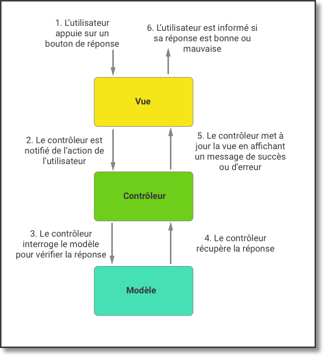

1.Créez une seconde activité
Dans la première partie de ce cours, nous avons créé une première activité, permettant de récupérer le prénom de l'utilisateur et de démarrer le jeu. Dans cette deuxième partie, nous allons créer une seconde activité. Cette activité permettra d'afficher le contenu du jeu. Elle sera démarrée par la première activité lorsque l'utilisateur cliquera sur le bouton de lancement du jeu. Vous vous demandez sûrement comment fonctionne le jeu ! C'est une demande légitime. C'est très simple : TopQuiz va poser une série de quatre questions à l'utilisateur, choisies aléatoirement parmi une banque de plusieurs questions. Pour chaque question, il aura le choix entre quatre réponses possibles. Dans cette vidéo nous allons voir comment créer une seconde activité
2. Découvrez l'architecture Modèle-Vue-Contrôleur
Dans cette partie , nous allons aborder une notion d'architecture logicielle, afin de l'appliquer à notre application TopQuiz.
Lorsque vous développez une application Android, vous êtes libres d'utiliser l'architecture logicielle de votre choix
De fait, les développeurs Android (mais pas qu'eux !) utilisent une architecture très courante appelée MVC, pour Model-View-Controller (ou Modèle-Vue-Controller en français, mais ça fait moins classe, je vous l'accorde). Cette architecture est très classique, et vous la retrouverez dans la majorité des développements. Elle n'est pas la seule, mais c'est celle-ci que nous allons étudier dans ce cours et l'appliquer à notre application TopQuiz.
À partir de maintenant, j'utiliserai le trigramme MVC au lieu d'écrire Model-View-Controller. Vu que je n'ai qu'un seul doigt, c'est plus rapide à taper.
L'architecture MVC:
L'architecture MVC consiste à découper son code pour qu'il appartienne à l'une des trois composantes du MVC. Lorsque vous créez une nouvelle classe ou un nouveau fichier, vous devez donc savoir à quelle composante il appartient :.- Modèle :
- contient les données de l'application et la logique métier. Par exemple, les comptes des utilisateurs, les produits que vous vendez, un ensemble de photos, etc. La composante modèle n'a aucune connaissance de l'interface graphique. Dans notre application TopQuiz, elle regroupera l'ensemble des questions et des réponses associées.
- Vue :
- contient tout ce qui est visible à l'écran et qui propose une interaction avec l'utilisateur. Par exemple, les boutons, les images, les zones de saisie, etc. Dans notre application TopQuiz, cette composante est définie dans les fichiers activity_main.xml et activity_game.xml.
- Contrôleur :
- c'est la "colle" entre la vue et le modèle, qui gère également la logique de l'application. Le contrôleur permet de réagir aux interactions de l'utilisateur et de lui présenter les données qu'il demande. Et ces données, où les récupère-t-il ? Dans le modèle bien entendu ! Dans notre application TopQuiz, cela correspond au code situé dans les fichiers MainActivity.java et GameActivity.java.
Application
Lorsque l'utilisateur interagit avec l'application, par exemple en répondant à une question, voilà ce qu'il se passe :
Dans le point 3, le contrôleur pourrait tout à fait mettre à jour le modèle si nécessaire : par exemple si l'utilisateur mettait à jour ses préférences.
Avantages
En appliquant l'architecture MVC, vous permettez à vos collègues de mieux comprendre votre code. Vous aurez également la garantie de pouvoir réutiliser votre code très facilement. Par exemple, vous pourriez décider d'exporter le modèle de votre application sous forme de librairie, afin qu'un autre développeur puis l'utiliser dans son application. Ainsi, peut-être proposera-t-il une interface graphique complètement différente de la vôtre !Inconvénients :
Vous aurez à créer et à maintenir davantage de fichiers (il est tellement plus tentant de tout mettre au même endroit !). Mais c'est un mal pour un bien, croyez-moi.Voilà, vous venez de découvrir l'architecture MVC. Lorsque vous créez un fichier, posez-vous toujours la question suivante : à quelle composante du modèle MVC appartient-il ? Si vous ne savez pas répondre précisément, peut-être est-il nécessaire de re-découper votre code.
3. Définissez votre premier modele
Dans cette vidéo nous allons voir comment définir un modele pour l'application :
4. Implémentez la logique de jeu dans le contrôleur
Dans cette vidéo nous allons voir comment implementer notre jeu Quizz dans le controleur :
5. Présentez le score au joueur
Dans cette partie , nous allons continuer à développer la logique de jeu dans la classe GameActivity, et plus précisément la gestion du score du joueur : sa comptabilisation et son affichage.
Gestion du nombre de questions
Tout d'abord, c'est à vous de décider combien de questions vous souhaitez proposer à l'utilisateur. Le plus simple consiste à créer un attribut de type int :
private int mNumberOfQuestions;
Puis d'initialiser sa valeur dans la méthode onCreate() :
mNumberOfQuestions = 4;
Cette variable vous permettra de déterminer quand arrêter le jeu. Prévoyez au moins deux fois plus de questions dans votre banque de questions, afin d'éviter de toujours voir apparaître les mêmes !
Nous décidons par exemple qu'une partie comprend quatre questions. Il est donc nécessaire d'implémenter une logique permettant d'arrêter le jeu après la quatrième question posée.
La variable mNumberOfQuestions sera utilisée en tant que compteur pour savoir quand arrêter le jeu. De fait, à chaque fois que l'utilisateur répondra à une question, cette variable sera décrémentée. Tant qu'elle ne sera pas nulle, la question suivante sera posée. Sinon, le jeu s'arrête.
Le résultat est le suivant (à implémenter dans la méthode onClick(), après vérification de la réponse) :

Gestion du score
Comptabilisation du score
Cette partie là est assez simple, et je suis sûr que vous n'auriez pas besoin de moi pour cette partie. Très simplement, il suffit de déclarer une variable de type entier, puis d'incrémenter sa valeur à chaque fois que le joueur saisit une bonne réponse.
Affichage du score
Lorsque le joueur a répondu à toutes les questions, la phase finale de jeu est enclenchée :- Le score est affiché à l'utilisateur dans une boîte de dialogue ;
- L'écran d'accueil est automatiquement affiché lorsque l'utilisateur clique sur le bouton OK.
La boîte de dialogue utilisée est gérée par la classe AlertDialog. Cette boîte de dialogue est entièrement paramétrable. Sachant que vous êtes encore de jeunes Padawans (bon je mets le lien Wikipedia à tout hasard, au cas où vous ayez vécu dans un bunker depuis votre naissance), nous allons l'utiliser de la manière la plus standard possible. À savoir : afficher un titre, un message et un bouton.
Avant d'aller plus loin, je dois vous avouer quelque chose. Je n'ai pas été tout à fait honnête avec vous. Je ne vous avais pas tout dit ! Je m'explique (roulement de tambour, suspens) : lorsque nous avons démarré la seconde activité (GameActivity en l'occurrence), la première activité (MainActivity, pour ne pas la nommer) n'a pas été détruite. Elle existe toujours ! En fait, l'affichage de GameActivity s'effectue au dessus de MainActivity. En d'autres termes, les deux activités se superposent. Pourquoi vous dis-je cela ? Vous allez comprendre !
Voici le code permettant de configurer et d'afficher la boîte de dialogue :

Voici quelques explications :
- Ligne 1 : il est nécessaire d'utiliser un objet spécifique pour "construire" la boîte de dialogue. C'est la sous-classe Builder qui s'en charge ;
- Ligne 3 : nous définissons le titre de la boîte de dialogue ;
- Ligne 4 : nous définissions le texte à afficher dans la boîte de dialogue ;
- Ligne 5 : nous définissons le texte du bouton à afficher, et fournissons l'implémentation de l'interface permettant de gérer le clic sur le bouton ;
- Ligne 11 : nous demandons à l'instance de Builder de construire la boîte de dialogue avec les paramètres que nous avons prédéfinis ;
- Ligne 12 : nous affichons notre belle boîte de dialogue.
Et la ligne 8 dans tout cela ? Eh bien la méthode finish() permet simplement de dire au système : j'en ai terminé avec l'activité courante, arrêtez-là et ramenez-moi à l'activité précédente. Pour faire simple, cela revient à cliquer sur le bouton Back du téléphone